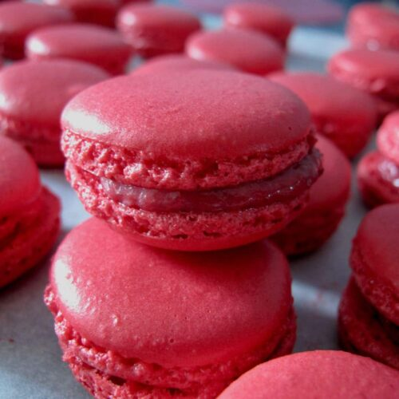

Raspberry Macarons

What are macarons/raspberry macarons?
Macarons are French sandwich cookies made with almond flour, eggs, sugar, and food coloring (which is optional). The fillings
can vary between jam, ganache, or buttercream. Macaron shells are smooth, crispy, and chewy. In this recipe, our raspberry macarons
are filled using fresh or frozen raspberries in a white chocolate ganache. The shells are classic - plain - to allow the tart and subtly sweet
filling to shine.
Ingredients you will need
- 200g fresh/frozen raspberries
- 180g white chocolate (broken into pieces)
- 100g egg whites (about 3-4 large eggs)
- 125g confectioners' sugar
- 125g almond flour
- 80g superfine sugar
- Red gel food coloring (optional)
Steps
- Add egg whites to a clean large glass or metal mixing bowl. Cover and refrigerate for
24 hours before bringing to room temperature.
- Take electric mixer and beat aged egg whites until they build volume and the beaters leave tracks.
Add superfine sugar slowly, in 3 parts, and continue beating until stiff peaks form. If using
gel coloring, add # of drops(depending on how pink/red you want the shells to be) and beat with low speed until color is evenly mixed in. Set aside.
- Sift almond flour and confectioners' sugar before adding to a large bowl.
- Slowly fold in the stiff egg whites to the dry mix, in 3 parts, until throughly incorporated.
It is vital to go slow; be very careful not to overmix.
- Line baking sheets with parchment paper. Spoon macaron batter into piping bag with medium round piping tip.
Pipe batter in 2-inch rounds onto parchment paper. Leave about 2 inches between rounds. After, bang pan
several times to pop air bubbles. Let sit out for 30-60 minutes, or only until macarons' surfaces are dry.
- Preheat oven to 325°F.
- Bake the macarons for 13 minutes, or until they are completely dry. Let the shells cool on baking sheet before
removing parchment paper.
- Blend raspberries in food processor for about 3-4 minutes until seeds are completely crushed.
- Transfer raspberry purée to saucepan over medium heat. Add white chocolate bits and using a wooden spoon,
stir slowly until chocolate has melted.
- Set the raspberry-chocolate filling aside to cool before refrigerating for 1 hour.
- Spoon filling to a piping bag. Pipe and fill a macaron shell before topping with another shell. Repeat with
remaining shells. Once macarons are all filled, refrigerate for 24 hours before serving.
ʚ Enjoy! ɞ
Credits: sallysbakingddiction ,
madaboutmacarons